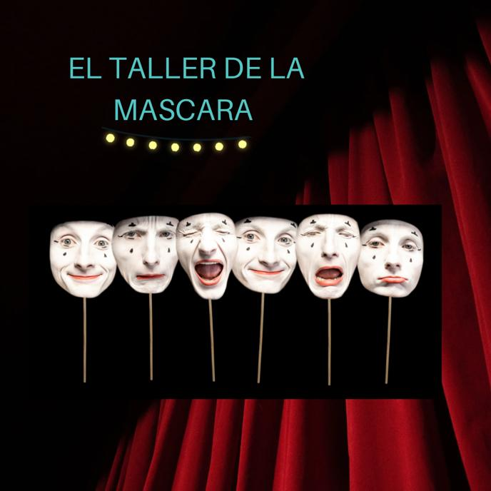
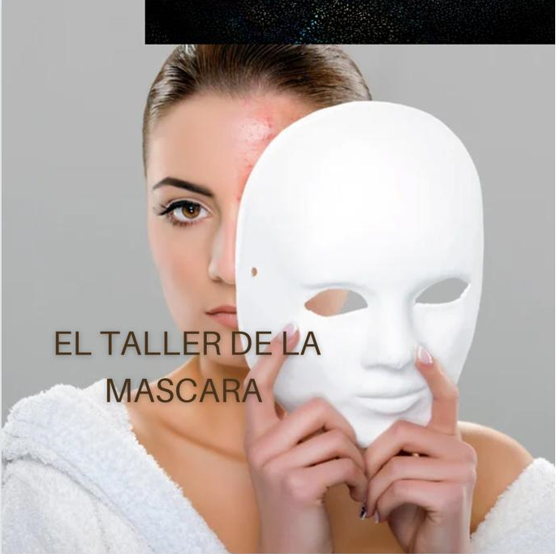

En esta experiencia vamos a permitirnos visualizar nuestras mascaras por medio del arte, esto no significa que estemos de acuerdo con seguir portándolas, sino poder ver esa posible herida oculta de nuestro niño interior que hoy podemos ver desde el adulto que somos.
Las máscaras emocionales son mecanismos de defensa que todos hemos utilizado en algún momento de nuestra vida para proteger nuestras emociones más vulnerables. Estas máscaras actúan como una fachada que oculta nuestras heridas emocionales, ya sean provocadas por traumas, experiencias dolorosas, o simplemente por la necesidad de encajar en la sociedad. Las máscaras pueden manifestarse de diversas maneras, como el humor excesivo, el perfeccionismo, la arrogancia, la ira, la venganza, la mentira, el controlador, masoquista, el dependiente. etc.
Con nuestra propia fisonomía facial, vamos relacionando cada tira de yeso con una máscara que portamos o personaje que tenemos identificado y profundamente arraigado a nuestra identidad, cada que coloquemos una tira en nuestro rostro aremos una compresión hasta que realicemos la totalidad de la máscara y después que terminemos la decoraremos con pintura, y diferentes materiales.
A partir de los 7 años hasta la edad adulta.
El 16 y 29 de marzo 2024
Aventura mall
10:00 am
2:00 pm
En este lugar vas a tener un rico refrigerio
Meditación guiada.
Video y explicación de las 5 heridas del alma
Arte y personas que al igual que tu necesitan ser escuchadas
Tira de Yeso
1 vaso de agua
Espejo de mesa
Pinturas
Decoración al gusto de la persona
De una forma amorosa y consiente vas a mirar hacia el espejo y veras como vas mirando esa mascara que por tanto tiempo has portado, te la vas a quitar y desde allí interior, dándole un lugar en tu interior a esos momentos de dolor que traes desde la niñes
Hasta que no nos reconciliamos con nuestras heridas, o nos hacemos conscientes de ellas, la vida nos va a poner múltiples situaciones similares en las que tengamos que trabajar con la observación de nuestras máscaras. Podemos sentir estas situaciones como pruebas del camino en el crecimiento y el desarrollo personal. Comencemos por observar, desde el amor y con mirada ecuánime, nuestras reacciones y nuestro profundo sentir ante las diversas situaciones en las que nos damos cuenta de que estamos llevando la máscara.
hola 2